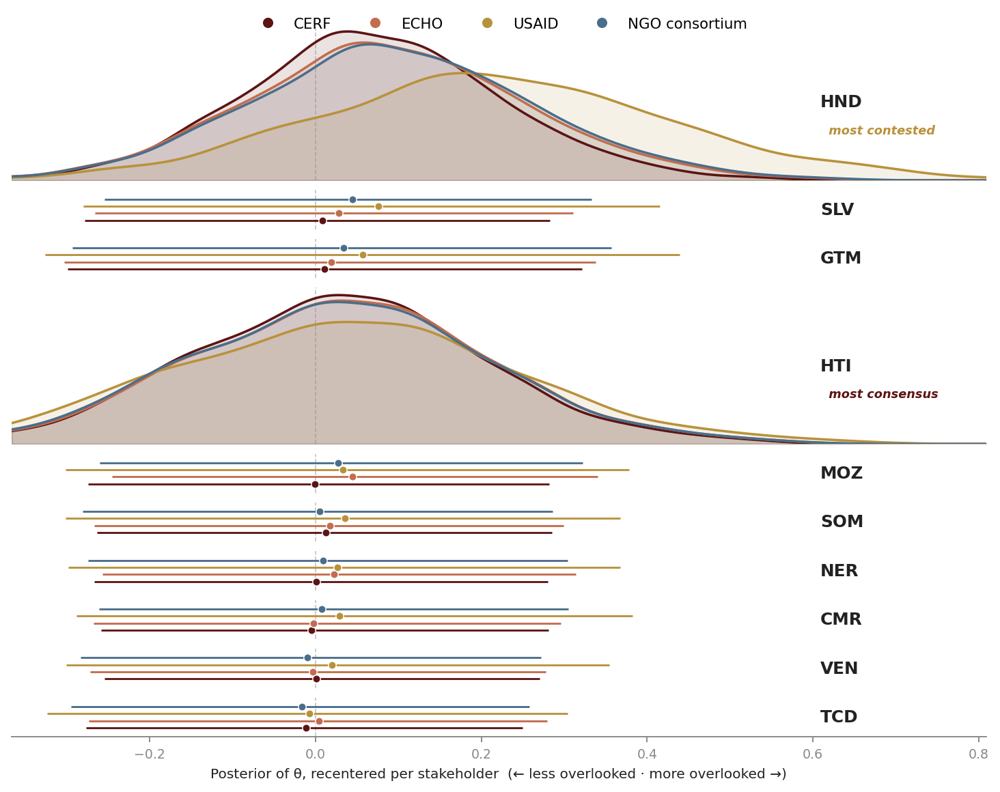

Geo-Insight / Methodology
Inferring overlookedness
A hierarchical Bayesian latent-variable model for ranking humanitarian crises, with calibrated uncertainty and external validation against expert consensus.
§ 1The problem
Ranking humanitarian crises by funding coverage used to work. It no longer does. Nearly every active response now sits below fifty per cent covered, and a single ratio places them in a dense band near the floor.
The 2026 Global Humanitarian Overview asks $\$33$ billion to reach 135 million people. The 2025 appeal raised $\$12$ billion — the lowest in a decade. Nineteen contexts cross the 50 % threshold, up from eight in 2021.

The interesting variation is no longer whether a crisis is underfunded, but how, and for whom. A neglected crisis can be forgotten (unfunded and unnoticed), contested (unfunded despite global attention), or sector-starved (adequate in aggregate, one cluster at twenty per cent). Three problems, three different responses. The rest of this document is a model that separates them.
§ 2The thing we cannot measure
Overlookedness is not written down anywhere. We can only infer it from signals that are noisy, incomplete, and seen by different stakeholders differently.
Call it $\theta(u)$: one real number per country, describing how overlooked that crisis is. It is a latent construct — no one has recorded it — but a useful one, because it lets us ask a sharper question than which crisis has the lowest coverage ratio. The sharper question is: given the evidence, what does the data say about $\theta$, and how confident should we be?
§ 3Six signals, three likelihoods
Six attributes observed per country, in four different mathematical shapes. Each gets a likelihood matched to its support — not normalised or reshaped into something uniform.
The attributes are: funding coverage shortfall, unmet amount per person in need, fraction of the population in need, INFORM severity category, donor concentration, and sectoral equity. Four live on $[0, 1]$. One is a positive real spanning orders of magnitude. One is an ordinal on $\{1, \ldots, 5\}$.

For the four bounded fractions, beta regression keeps the predicted mean on $[0, 1]$: $a_i \mid \theta \sim \mathrm{Beta}\bigl(\mu_i\phi_i,\,(1-\mu_i)\phi_i\bigr)$ with $\mu_i = \sigma(\alpha_i + \beta_i\theta)$. For the per-person gap, $\log a_2 \sim \mathcal{N}(\alpha_2 + \beta_2\theta,\,\sigma_2^2)$ — financial gaps scale multiplicatively across crises. For severity, ordered logistic with four cut-points $\kappa_1 < \kappa_2 < \kappa_3 < \kappa_4$ inferred alongside everything else: we let the data say how INFORM actually spaces its categories, rather than assume they are equidistant.
Every slope $\beta_i$ is sign-constrained positive via a Half-Normal prior. Each attribute is defined so that larger values correspond to more-overlooked: higher coverage shortfall, higher per-PIN gap, more concentrated donors, sharper sectoral inequality, higher need intensity, higher severity. Without these constraints, the latent's sign is unidentifiable from six observations and the inferred $\theta$ picks up an arbitrary linear combination of the attributes.
Missing observations contribute no likelihood term. Not an imputation,
not a zero, simply nothing — via numpyro.handlers.mask.
A country with sparse data produces a structurally wider
posterior, never a shifted one.
§ 4Pooling partial-data countries
Countries with few observed attributes should not dominate the ranking. The data-generating story and the prior together have to ensure this — not a post-hoc filter.
A population-level prior on $\theta$ pools the per-country values toward a common centre:
$$ \mu_\theta \sim \mathcal{N}(0,\, 0.3),\qquad \sigma_\theta \sim \mathrm{Half}\text{-}\mathcal{N}(0.5),\qquad \theta(u) \mid \mu_\theta, \sigma_\theta \sim \mathcal{N}(\mu_\theta,\, \sigma_\theta^2). $$
Under this prior, a country with few observed attributes inherits weak evidence — its likelihood has fewer terms, so the posterior is pulled back toward the population centre. Short Gaussian tails matter: we tried Student-$t$ for outlier robustness and it failed in the wrong direction, letting sparse-data countries drift to extreme posterior medians. Gaussian tails penalise excursions quadratically, which is the right trade when the goal is shrinkage under sparse evidence.
Combined with the sign-constrained slopes from §3, this gives the model two complementary commitments. Sign constraints fix what θ means (positive direction = more overlooked). Hierarchical pooling controls how much the data can move θ for any one country (strongly for dense evidence, softly for sparse).
§ 5Stakeholders, as priors
Different stakeholders believe different things about which attributes reflect overlookedness most strongly. We encode each stakeholder as a prior over the six slopes, not as weights in a sum. Each produces a separate posterior over $\theta$.
For stakeholder $s$, $\beta_i^{(s)} \sim \mathrm{Half}\text{-}\mathcal{N}(m_i^{(s)})$ across the six attributes $i = 1, \ldots, 6$. The scale parameter $m_i^{(s)}$ says how strongly that stakeholder expects attribute $i$ to reflect $\theta$. We pre-register four: CERF (severity and magnitude emphasis), ECHO (sectoral equity), USAID (donor concentration), NGO consortia (cluster equity). The values are illustrative — a natural next step is to regress each agency's actual allocations on the attributes to recover an effective prior.
We fit four posteriors. A country's ranking under each lens depends on where its data pulls $\theta$ under that lens's priors. Two readings fall out:
- Consensus — a country sits in the top-10 under all four stakeholders. The data dominates whatever the priors emphasise; every lens converges on the same crisis.
- Contested — a country is in the top-10 under some but not all. Its position depends on whose priors you apply, and that disagreement is itself the operational signal.

analysis/bayesian/stakeholders.py.
Across the 22-country HRP-eligible pool in the 2025 cycle, five countries are consensus (HND, SLV, GTM, HTI, SOM) and eleven are contested under at least one lens (BFA, CMR, COL, MLI, MMR, MOZ, NER, NGA, TCD, VEN, YEM). Within the top-10: Honduras is the most contested — three lenses place it near the same modest position, USAID's density sits visibly right. Haiti is the most consensus — all four densities stack almost perfectly.
Three properties follow. First, the priors are falsifiable: if a stakeholder's posterior moves away from its prior centre, we have learned something about that stakeholder's stated-versus-effective preference. Second, disagreement is the overlap of four posteriors, which we can measure directly. Third, the method is context-sensitive by construction: where data is abundant, all four posteriors converge; where it is sparse, stakeholder differences dominate.
§ 6The posterior, fully resolved
The output is a posterior over $\theta$ for each eligible country, summarised by its median and a 90 % credible interval. The ranking comes from the medians; the intervals say where the data can and cannot distinguish.

analysis/bayesian/hierarchical.py.
Two readings matter more than the absolute numbers. Ordering over absolute values: the latent has no global anchor, so $\widehat\theta = -0.11$ carries no external meaning; only position within the pool does. Set membership over strict ranking: the 90 % intervals overlap heavily across the top-10, so the defensible claim is that these ten crises sit at the overlooked end of the pool — not that any one is unambiguously above any other.
The top-10 under the canonical (diffuse-prior) fit for the 2025 cycle: HND · SLV · MOZ · SOM · GTM · NER · HTI · CMR · VEN · TCD. Seven of these ten also appear on CERF Underfunded Emergencies allocations across 2024–25 — the model recovers expert consensus with a credible interval on every pick.
Posterior predictive checks (§8) reveal an additional reading: the latent is best interpreted as a funding-overlookedness axis. Coverage shortfall and donor concentration drive it (per-country Pearson $r = 0.76$ and $0.82$); need intensity, sectoral equity, and severity sit near their attribute ceilings across the HRP-eligible pool — they constrain the posterior without differentiating between countries.
§ 7Why twenty-two, and not more
The model fits twenty-two countries in 2025. A reader rightly asks why — especially when eight benchmark picks sit outside our pool. This section answers honestly.
The candidate pool is defined by a single condition: the per-PIN gap attribute $a_2$ is observed, i.e., the country has both an HNO-filed people-in-need figure and positive FTS requirements. This is the scope a formal HRP cycle is conducted for, and it is largely the population CERF Underfunded Emergencies itself picks from.
Eight countries appear on CERF UFE or CARE BTS but sit outside our pool: AGO, BDI, ETH, MDG, MRT, MWI, SYR, ZMB. For six of them (AGO, BDI, MDG, MRT, MWI, ZMB), no formal HRP exists — they appear on CERF UFE precisely because they are underfunded emergencies that slip through the HRP process. For ETH and SYR, the HNO 2025 source file is genuinely empty in our panel (zero rows) despite their active humanitarian operations in FTS.
Expanding the pool does not help. Gating on any appeal (requirements $> 0$) admits tiny flash appeals where coverage_shortfall saturates at 1 mechanically; the ranking becomes dominated by countries like Chile and Trinidad & Tobago hosting small Venezuelan-migration flash appeals. Gating on an attribute-completeness floor captures three of the eight missing picks (MWI, SYR, ZMB) but degrades external precision@k against the most recent CERF window from 5/10 to 2/10, because partial-data countries crowd out fully-observed CERF-aligned picks. The 22-country gate is where the data lands cleanly.
§ 8Validation
Four checks, each falsifying a different claim. The model has to pass each one on its own terms: recovery of expert consensus, calibrated marginals, out-of-sample predictive accuracy, and fidelity of the variational posterior to a gold-standard reference.
External benchmarks
The posterior median ranking is scored against two human-curated lists, produced by methodology independent of anything here: CERF Underfunded Emergencies (the UN Emergency Relief Coordinator's twice-yearly allocations) and CARE Breaking the Silence (annual top-ten most under-reported crises). As an ablation we also score a simple additive baseline — the unweighted mean of the six standardised attributes — on the same pool.
| Benchmark | $k$ | Bayesian | Additive baseline |
|---|---|---|---|
| CERF UFE 2024 w2 (Dec 2024) | 10 | 3/10 | 3/10 |
| CERF UFE 2025 w1 (Mar 2025) | 10 | 5/10 | 5/10 |
| CERF UFE 2025 w2 (Dec 2025) | 7 | 2/7 | 1/7 |
| CARE BTS 2024 | 10 | 3/10 | 1/10 |
The Bayesian ties the baseline on the two larger CERF windows (where the big-name crises dominate) and beats it on the smaller windows and on CARE BTS — where the baseline collapses to 1/10. The advantage is largest where the data is sparsest.
Posterior predictive checks
For each of the six attributes, 1{,}000 replicates are drawn from the fitted posterior and compared against the observed marginal. Coverage of the 90 % predictive interval is $\geq 0.91$ on every attribute — the model's marginals are calibrated. Per-country Pearson correlation between the predicted mean and the observed value tells a sharper story: high for coverage shortfall (0.76) and donor concentration (0.82), weak for need intensity, sectoral equity, and severity. The weak attributes sit near their ceilings across the HRP pool (most countries have PIN $\approx$ population and severity $\in \{4, 5\}$); they constrain the posterior without differentiating between countries. The latent reads as a funding-overlookedness axis — a property, not a flaw.

analysis/bayesian/ppc.py.
Temporal held-out
A genuine out-of-sample test. Fit the model on the 2024 cycle alone — HRP 2024, FTS through end-2024, INFORM through end-2024 — and score the 2024-fit ranking against CERF UFE selections made in 2025. The 2024 fit predicts CERF's March-2025 picks at 4/10 precision @ 10 without seeing any 2025 data. Year-over-year top-10 overlap is 7/10: HND, HTI, MOZ, SLV, SOM, TCD, VEN persist; ETH, MLI, SYR drop out; CMR, GTM, NER enter on 2025 evidence. The model identifies the same crisis cluster across cycles; turnover at the boundary reflects real cycle-to-cycle change, not model noise.
Variational-to-MCMC calibration
The variational posterior is checked against NUTS — the gold-standard
Hamiltonian Monte Carlo reference — on every fit. The production
AutoMultivariateNormal guide runs in three seconds and
recovers NUTS posterior medians at Spearman $\rho = 0.89$, with
credible intervals within $2\times$ of NUTS. The simpler
mean-field AutoNormal guide gives $\rho = 0.68$ and
underestimates posterior variance by a factor of three — a finding
that surfaced only because we ran NUTS, and the reason we ship the
multivariate guide.
§ 9What this does not claim
A ranked posterior with credible intervals, for a clearly-defined pool, validated against external consensus. That is the claim. Several things it is not.
Not a forecast. The model infers $\theta(u, t)$ from observed data. Forward prediction is the job of the temporal layer (§10), which is not yet shipped.
Not a causal model. The observation likelihoods are statistical associations, not interventions. The model says nothing about whether a change in donor concentration would cause a change in overlookedness — only that the two covary in the way we modelled.
Not a substitute for judgement. The output is a ranked list with uncertainty, for a coordinator to read. Every posterior carries the attribute-level contributions that produced it, so the decision-maker can see exactly what drove a ranking.
The benchmarks are proxies. CERF UFE reflects a political process. CARE BTS reflects media attention. Agreement is informative, not conclusive.
The stakeholder priors are illustrative. The values encode what we believe CERF, ECHO, USAID, and NGO consortia broadly care about. A serious follow-on would regress each agency's actual allocations against our attributes to recover an effective prior — that is the calibration we have not yet done.
$\theta$ is latent. Every posterior statement is contingent on the observation model being approximately correct. §8's four validations are evidence for this. They are not proof.
§ 10Three next layers
The current fit is cross-sectional, diffuse-prior, and conditioned on six hand-designed aggregates. Three extensions sit naturally on top of the same machinery. Each plugs into the typed ontology with the same provenance and uncertainty discipline as everything below it.
Calibrated stakeholder priors
Today's stakeholder priors are pre-registered judgement. The natural next step is to regress each agency's actual allocations against our attributes and recover an effective prior — the one implied by behaviour, not by a stated policy table. The four posteriors would then reflect what CERF, ECHO, USAID, and NGO consortia do rather than what they say.
Temporal AR(1)
A per-country AR(1) on $\theta$, $\theta(u, t) = \mu_u + \rho_u\bigl(\theta(u, t-1) - \mu_u\bigr) + \eta_u(t)$, returns chronic ($\mu_u$) and acute ($\theta - \mu_u$) decompositions from the same posterior. It is not yet identified by our data: annual HRP and FTS attributes provide at most two time points across 2024–25 per country, below what AR(1) inference needs to distinguish persistence from noise. INFORM severity is monthly and would anchor a partial-temporal model. Until then, fitting the cross-sectional model on consecutive cycles already gives the 7/10 year-over-year top-10 overlap and the 4/10 held-out precision reported in §8.
Learned representation layer
Under our six aggregates sits a richer raw panel: eighteen INFORM sub-indicators on displacement, casualties, access, and phase-level need; monthly flows donor by donor; sector-level breakdowns. A sequence model — Mamba, a masked-attention encoder — trained on this panel could produce an embedding $z(u, t)$ that carries what the aggregates discard. The extension slots in cleanly: replace $a_i \mid \theta$ with $\{a, z\} \mid \theta$. The latent $\theta$ stays scalar and interpretable; the encoder has a crisp objective — reduce posterior variance on $\theta$ given the evidence — and a registered place in the ontology, with training data and failure modes declared alongside every other property.
Each extension is held to the discipline of the rest of the system: declared formulas, declared failure modes, posteriors with credible intervals, decision support rather than automation. None of them relaxes the honest-uncertainty commitment that carries everything above.